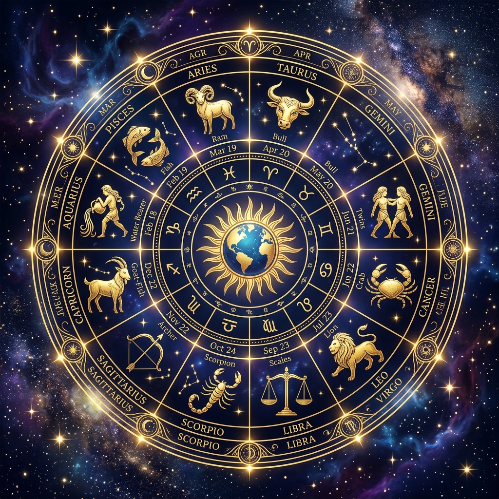

Astro90 Astrology Portal
Welcome to the world's premium Vedic Astrology platform. Consult verified professionals, examine your birth chart D1/D9/D10 calculations, and resolve your life bottlenecks using scientific pattern analysis.

Daily Rashis (Horoscopes)
Select your sun sign below to view immediate predictions relating to love, career, health, and finance.
Verified Astro90 Astrologers
Connect phonically or by chat with verified professionals holding over a decade of astrological auditing experience.

Siddharth (Sid)
Chief Vedic Consultant & Auditor
Specializes in scientific house coordinates, career path pivots, audit analysis, and Mangal remedies.
Call Sid ($2.0/min)
Acharya Shastri Ji
Pooja & Guna Milan Specialist
Specialist in marriage matching, planetary energizations, Kaal Sarp and Pitra Dosha pujas.
Call Shastri ($1.8/min)